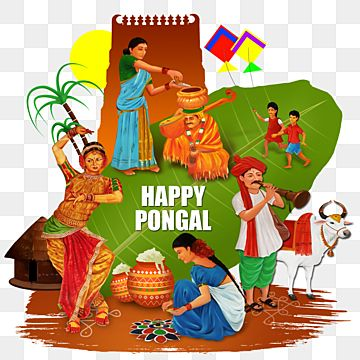
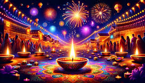
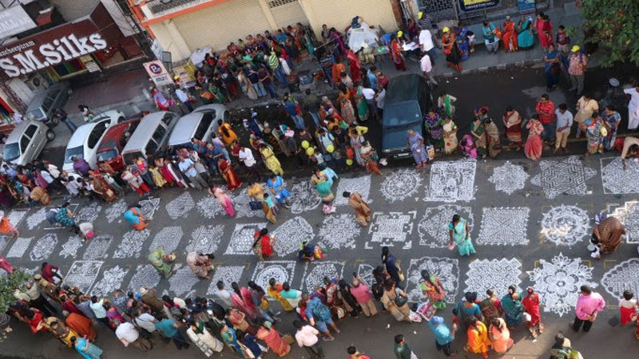
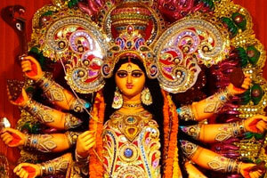

Notable Festivals
Tamil Nadu is known for its vibrant and colorful festivals that reflect the state's rich cultural and religious heritage. Here are some of the most celebrated festivals in Tamil Nadu.

Pongal:
Pongal is a major harvest festival celebrated with great enthusiasm in Tamil Nadu. It involves cooking a special dish called Pongal and offering it to the Sun God, along with various festivities and family gatherings.

Deepavali:
Deepavali, or Diwali, is celebrated with lights, fireworks, and sweets. It marks the victory of light over darkness and good over evil, and is one of the most important festivals in Tamil Nadu.

Thaipusam:
Thaipusam is a significant festival for the Tamil community, marked by acts of penance and devotion. Devotees participate in processions and perform rituals to seek divine blessings.
